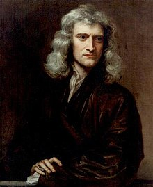

Portrait of Newton at 46 by Godfrey Kneller, 1689
Here's some information about Isaac Newton:
Sir Isaac Newton PRS (25 December 1642 – 20 March 1726/27[a]) was an English mathematician, physicist, astronomer, theologian, and author (described in his own day as a "natural philosopher") who is widely recognised as one of the most influential scientists of all time and as a key figure in the scientific revolution. His book Philosophiæ Naturalis Principia Mathematica (Mathematical Principles of Natural Philosophy), first published in 1687, laid the foundations of classical mechanics. Newton also made seminal contributions to optics, and shares credit with Gottfried Wilhelm Leibniz for developing the infinitesimal calculus.
Newton built the first practical reflecting telescope and developed a sophisticated theory of colour based on the observation that a prism separates white light into the colours of the visible spectrum. His work on light was collected in his highly influential book Opticks, published in 1704. He also formulated an empirical law of cooling, made the first theoretical calculation of the speed of sound, and introduced the notion of a Newtonian fluid. In addition to his work on calculus, as a mathematician Newton contributed to the study of power series, generalised the binomial theorem to non-integer exponents, developed a method for approximating the roots of a function, and classified most of the cubic plane curves.
Newton was a fellow of Trinity College and the second Lucasian Professor of Mathematics at the University of Cambridge. He was a devout but unorthodox Christian who privately rejected the doctrine of the Trinity. Unusually for a member of the Cambridge faculty of the day, he refused to take holy orders in the Church of England. Beyond his work on the mathematical sciences, Newton dedicated much of his time to the study of alchemy and biblical chronology, but most of his work in those areas remained unpublished until long after his death. Politically and personally tied to the Whig party, Newton served two brief terms as Member of Parliament for the University of Cambridge, in 1689–90 and 1701–02. He was knighted by Queen Anne in 1705 and spent the last three decades of his life in London, serving as Warden (1696–1700) and Master (1700–1727) of the Royal Mint, as well as president of the Royal Society (1703–1727).
The epitaph on his tomb contains the following text: “Here rests Sir Isaac Newton, a nobleman, who with an almost divine reason first demonstrated, with the torch of mathematics, the motion of the planets, the paths of comets and the flows of the oceans. He researched the differences in light rays and the different colors that appear in connection with it, which no one suspected before him. A diligent, wise and correct interpreter of nature, of antiquity and of Holy Scripture, he affirmed through his philosophy the greatness of Almighty God, and by his character he expressed evangelical simplicity. Let mortals rejoice that there has been such an adornment of the human species. Born on December 25, 1642, died on March 20, 1727 ” .